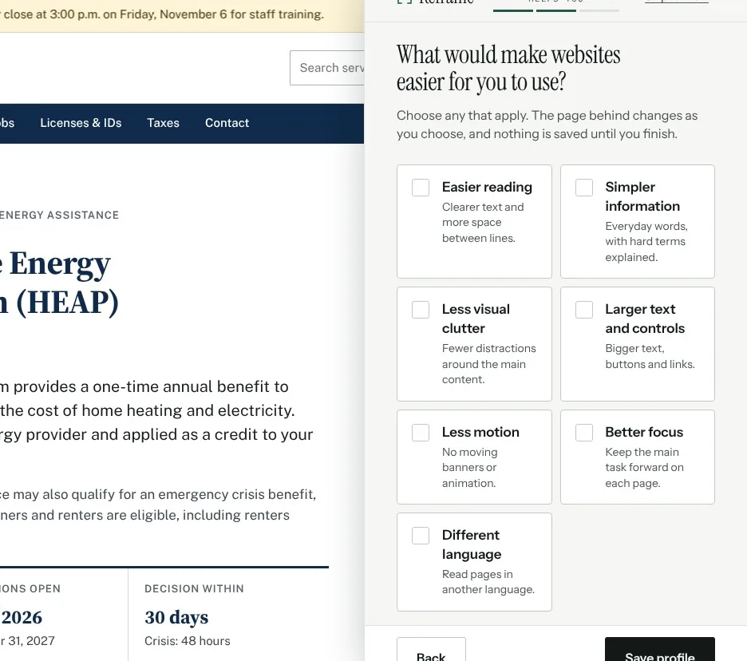
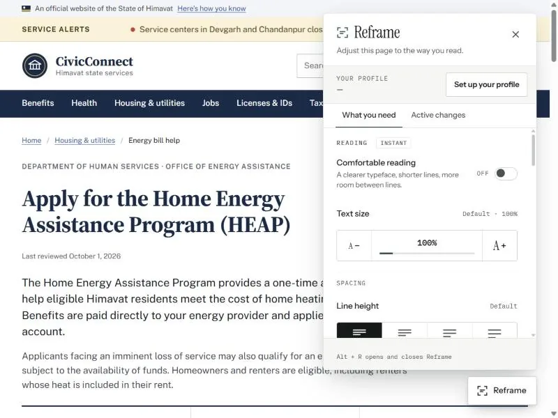
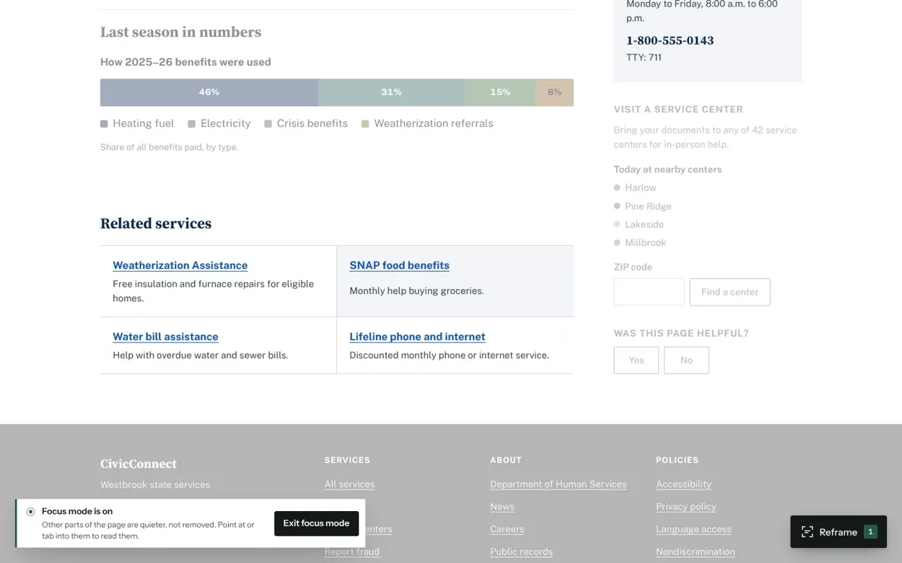
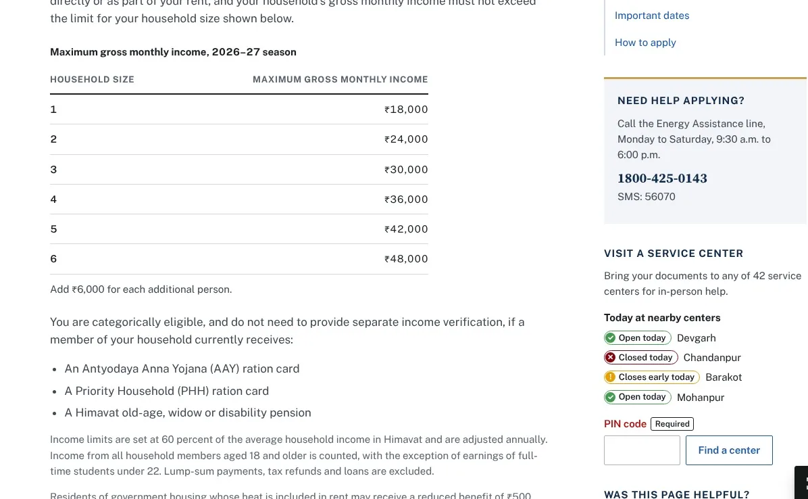
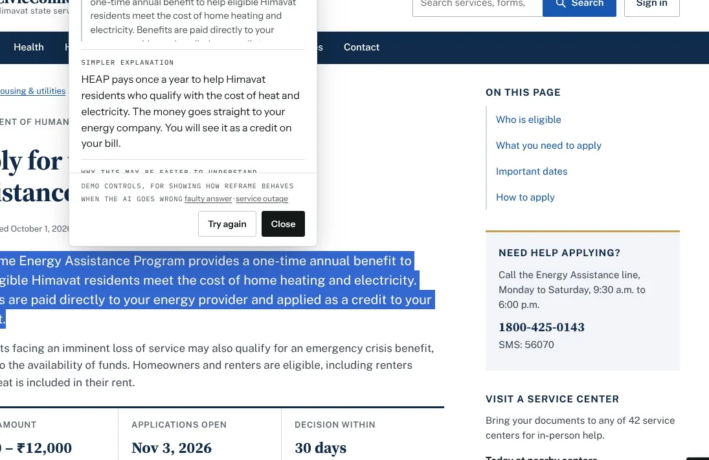
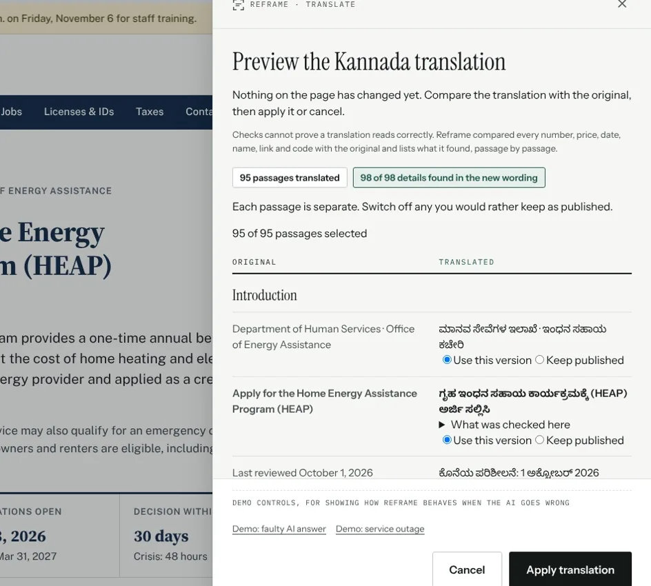
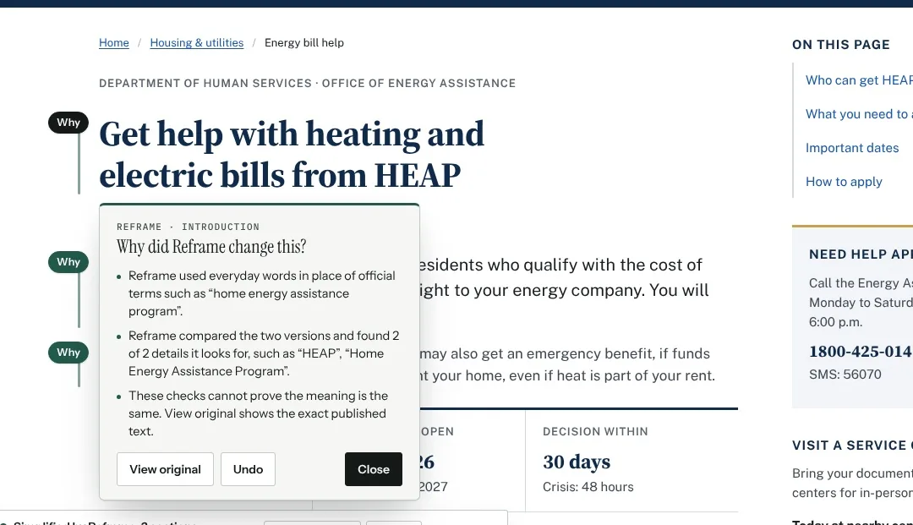

Reframe
Make the page easier to read. Keep the reader in charge.
I designed and built Reframe, a reading layer for existing websites. It lets people adjust how a page looks and reads, review suggested changes to the wording, and get back to the published version.
I built CivicConnect to make the design problem concrete. Imagine trying to find out whether you qualify for help with an energy bill. The deadline is buried, several parts of the page compete for attention, and a single “unless” can change your answer.
CivicConnect, its energy-assistance program and all example eligibility details are fictional.
- My role
- Research, UX, UI, content design and prototype development.
- The test case
- A fictional benefits page with income limits, deadlines and exceptions.
- What I measured
- The rewrite checks caught 9 of 12 meaning-changing examples in a hand-labelled benchmark.

01 A simplified eligibility passage, with an explanation of the change and access to the published wording.
The deadline is in there somewhere
The project began with desk research and self-testing on CivicConnect. I looked at browser reading tools, operating-system settings, plain-language guidance and criticism of accessibility overlays.
Personas grounded in reading situations
These are scenario-based personas synthesized from the desk research. One reader can move between them over the course of a single visit.
The tired applicant
Dense text and competing alerts make it hard to keep a place. Needs comfortable reading, simpler wording, focus and reduced motion.
The reader in glare
Small type, weak contrast and color-only cues make details hard to see. Needs more legible text, bigger controls and clearer visual cues.
The multilingual reader
A term or eligibility condition is unclear in English. Needs an explanation or a translation with the original close at hand.
How might we help a reader find and understand the rule that applies to them, without asking them to disclose a diagnosis or giving up access to the published text?
Two questions guided the design: Where should a change take effect immediately? Where does the reader need to stop and inspect it first?
One panel, two ways to make a change
I organized the panel around what the reader wants to do: read, understand, see, focus, reduce motion or switch language. How the change takes effect depends on what it touches.
Ask what would help
The optional setup asks one question in everyday language and lets readers skip it. Preferences stay on the device. A single launcher opens the same panel later, with a separate Active changes view for reviewing and undoing adjustments.


A preview for every change slows down visible adjustments. An immediate rewrite makes readers discover changed rules after the fact. I gave these two kinds of change different paths.
I carried the same approach into the interface: plain labels, warm paper tones, a restrained accent and no chat window to learn.
Turn down the noise
The page should stay usable while the reader changes it. Comfortable reading, text size and line height make the article easier to scan. Larger interface controls and high contrast address different parts of the same problem.


Keep the deadline in view
Focus mode dims peripheral navigation, sidebar material and the footer. Hover or keyboard focus brings those areas back into view. Warnings, eligibility rules, requirements, deadlines, rights information and help lines are protected from dimming.
Give color a second cue
The vision tools can improve color distinction, add labels or visual cues, and emphasize links. Reframe looks for a label in the page first. When the page cannot support a proposed interpretation, the element stays as published.
The guided tour also demonstrates individual undo, the reduced-motion setting for a moving alert ticker, and the control for larger interface elements.
Show the rewrite before it touches the page
A shorter sentence can be easier to read and still send someone to the wrong office. I split permission to send text from permission to apply the result.


The review says what it checked. It gives the reader the evidence it has, without a confidence percentage.
The prototype also supports an Everyday words review for lighter edits and adds an overview to the simplified page.
Keep the original within reach
Sometimes the sticking point is one phrase. Sometimes the reader needs a different language for the whole task. Each path keeps the source close enough to consult.




What the checks caught and missed
I hand-labelled 19 pairs of original passages and rewrites from CivicConnect: 12 that changed the meaning and 7 that preserved it. I ran them through the prototype’s rule-based checks.
Same deadline, different person
Both sentences kept “must” and “30 days.” The duty changed hands. The other misses reversed cause and effect or introduced a claim about the office while retaining the expected names. The checks also refused one faithful rewrite that split a sentence into steps.
What I’d test next
The benchmark measures the checks on one fictional page. Participant outcomes, translation accuracy across sites and accessibility conformance remain open. The extension is a concept build.
1 Mozilla Firefox Reader View · 2 Microsoft Edge Reading mode · 3 W3C cognitive accessibility guidance · 4 EDF and IAAP statement on overlays
Project evidence: original case study PDF and archive, guided tour, and Reframe’s evaluation notes. Prototype screenshots appear throughout.